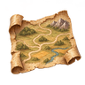
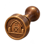
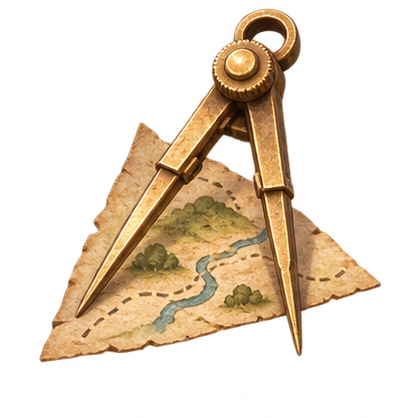
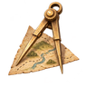
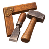

<!doctype html><html lang="pt-BR"><meta charset="utf-8"><meta name="viewport" content="width=device-width,initial-scale=1"><title>Equipamentos — sheet 3×3</title><style>body{background:#1b1c1e;color:#efdfbc;font-family:Georgia;margin:0;padding:18px}main{max-width:1000px;margin:auto}section{display:grid;grid-template-columns:repeat(3,minmax(0,1fr));gap:16px}article{text-align:center;background:radial-gradient(ellipse at top,#6c533333,transparent);border-bottom:1px solid #b59b6144;padding:8px}.large{width:100%;height:190px;object-fit:contain}h2{font-size:17px}article div{display:flex;align-items:center;justify-content:center;gap:10px}article div img{object-fit:contain}@media(max-width:600px){section{grid-template-columns:repeat(2,minmax(0,1fr))}.large{height:135px}article div{flex-wrap:wrap}}</style><main><h1>Equipamentos · nove recortes</h1><section><article><h2>Saco de Sementes</h2><div></div></article><article><h2>Martelo do Mestre</h2><div></div></article><article><h2>Estandarte da Vigília</h2><div></div></article><article><h2>Mapa de Estradas</h2><div></div></article><article><h2>Selo dos Armazéns</h2><div></div></article><article><h2>Registro do Intendente</h2><div></div></article><article><h2>Compasso do Cartógrafo</h2><div></div></article><article><h2>Ferramentas do Construtor</h2><div></div></article><article><h2>Cofre da Colheita</h2><div></div></article></section><p><a href="sheet.png" style="color:#efcf89">Sheet original</a></p></main></html>